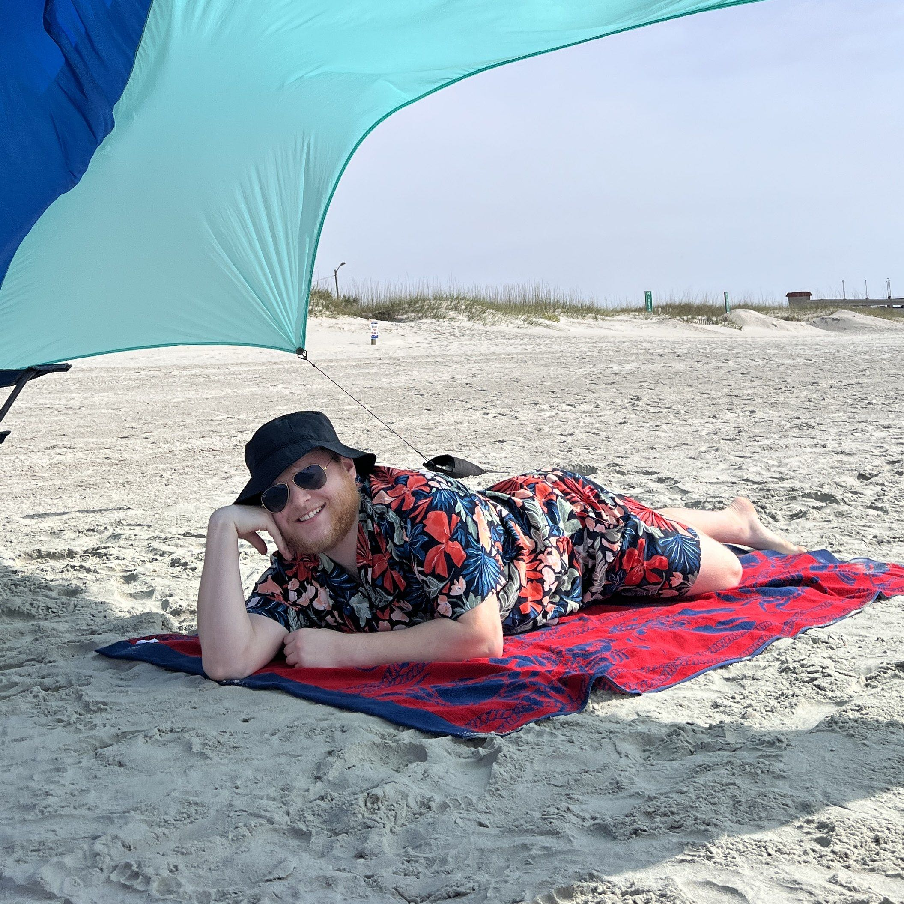

I am a recent graduate from UNC Charlotte that studied Computer Science with a concentration in artificial intelligence, robotics, and gaming with a minor in Computer Engineering. I have gained experience in many programming languages, frameworks, and libraries in my during my years at university. My favorite memory was getting hands-on with programming robots and operating the motion capture system in the robotics lab.
Lately, I have enjoyed gaining industry experience at Wells Fargo, through a momentous journey of technology modernization and consolidation.
I like to do many things in my free time. Outside of work, I stay busy with video games, pickleball, road cycling, working out, building Gundams, and learning about the many sub-fields of computer science!
Picture of me!

Based in North Carolina → {{ currentTime() | date: 'hh:mm:ss aa' }}